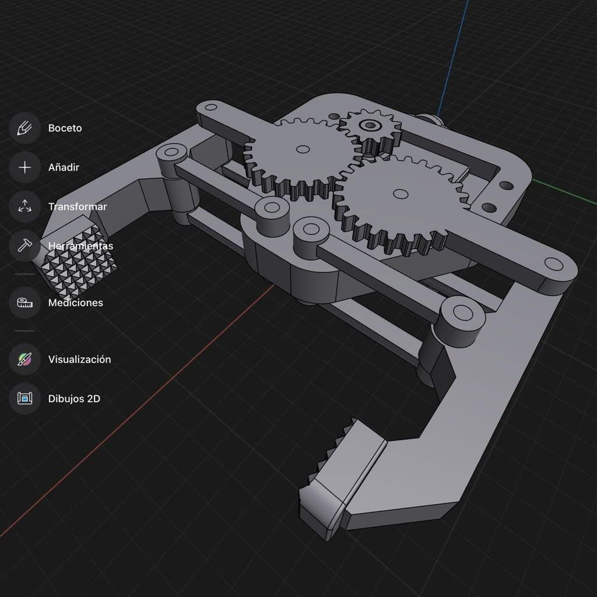
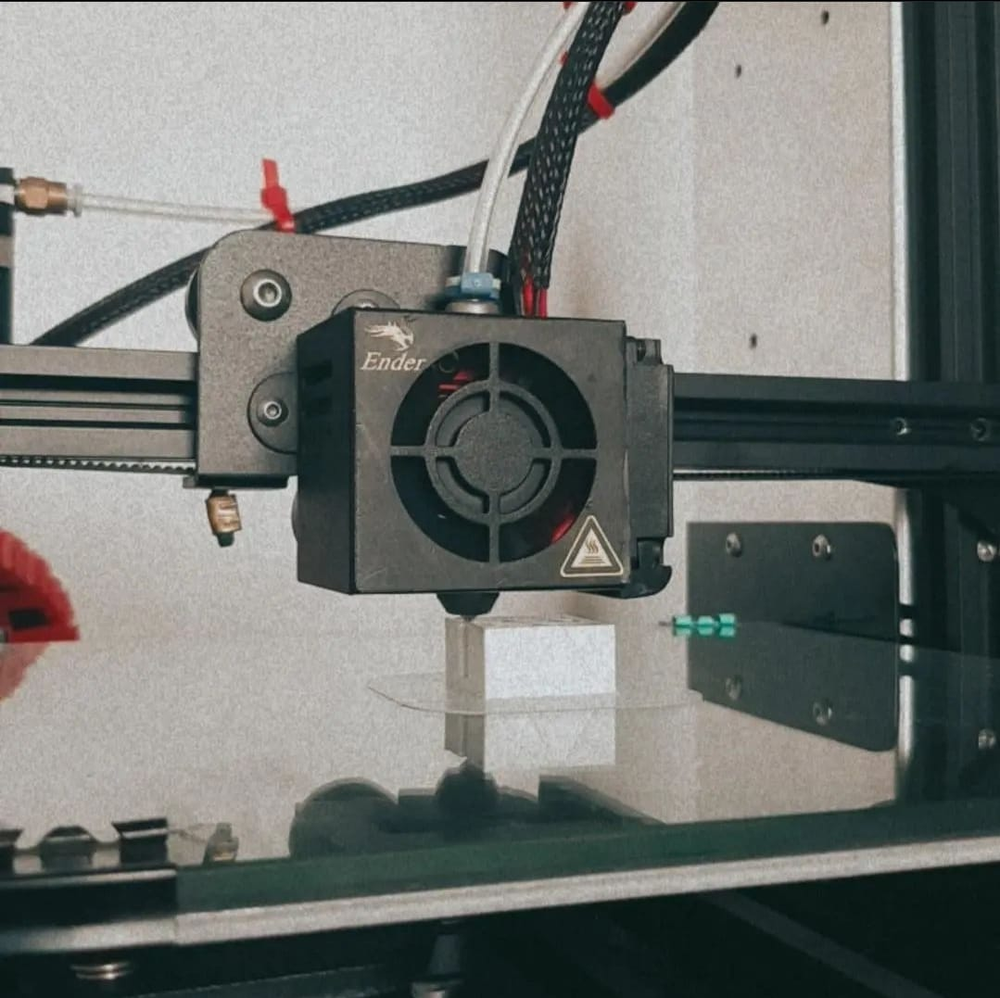
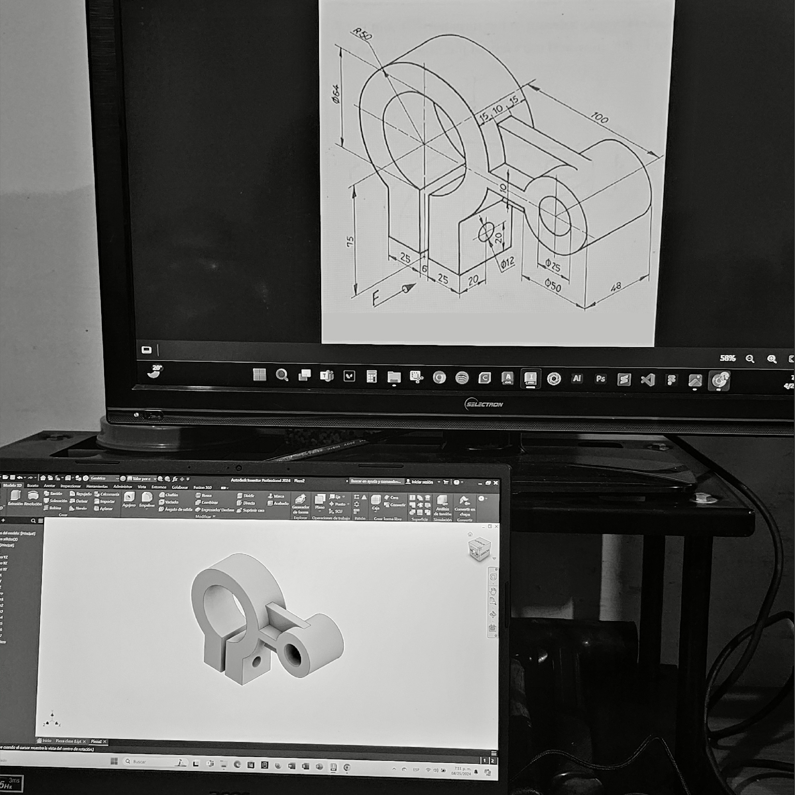

servicios
modelado 3d
El modelado 3D es el proceso de crear representaciones digitales tridimensionales de objetos utilizando software especializado. Estas representaciones pueden ser simples formas geométricas o modelos detallados con texturas y acabados. Es ampliamente usado en ingeniería, diseño industrial, arquitectura y entretenimiento. Los modelos permiten visualizar ideas antes de fabricarlas, ahorrando tiempo y costos. Además, son fundamentales para procesos como animación, simulaciones y prototipado.
impresión 3d
La impresión 3D es una tecnología que fabrica objetos físicos capa por capa a partir de modelos 3D digitales. Utiliza materiales como plásticos, resinas, metales e incluso biopolímeros, dependiendo de la aplicación. Es ideal para crear prototipos, piezas personalizadas o productos finales de manera rápida y precisa. Su uso abarca desde la industria automotriz hasta la medicina y el arte. Esta técnica transforma el diseño en realidad, facilitando la innovación.
planos fabricación

Los planos de fabricación son documentos técnicos que detallan las especificaciones necesarias para producir una pieza o ensamblaje. Incluyen dimensiones, materiales, tolerancias y acabados, garantizando precisión en el proceso de manufactura. Estos planos son fundamentales para comunicar las ideas del diseñador a los fabricantes. En ingeniería y diseño industrial, son una herramienta clave para transformar un modelo 3D en un producto real. Además, facilitan la estandarización y evitan errores en la producción.
cursos
Aprender modelado 3D es esencial para quienes buscan innovar o destacarse en sectores tecnológicos. Son una inversión clave para potenciar habilidades y ampliar oportunidades laborales. En el curso de modelado 3D enseñamos a utilizar herramientas digitales para diseñar objetos tridimensionales con aplicaciones prácticas. Ofrecen conocimientos desde conceptos básicos hasta técnicas avanzadas.